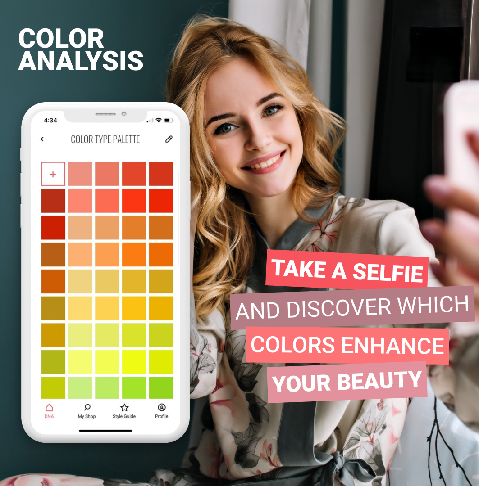

1. Color Analysis
You’re one selfie away from seeing your personalized color palette. Our smart science will analyze your features and reveal the colors that will best enhance your natural beauty.

One selfie is all it takes for our smart science to analyze your unique features and reveal the colors that enhance your natural beauty. Get your personal color palette.
Unsure about buying a specific item? Need wardrobe updates or personalized clothing suggestions?
You’re one selfie away from seeing your personalized color palette. Our smart science will analyze your features and reveal the colors that will best enhance your natural beauty.
Explore the right shades for you, considering the temperature (warm – cold), depth (light – dark) and saturation (bright – soft) of each hue.
Once your color type is determined your color type, you’ll be able to explore your color palette. These hues are perfect for dressing the top half of the body – think blouses, sweaters, tops and dresses.
When you’re working on your wardrobe, it’s important to understand your own personal style. There’s no point copying trends you’ve seen elsewhere: it’s all about finding an aesthetic that enhances your beauty and works for your lifestyle.